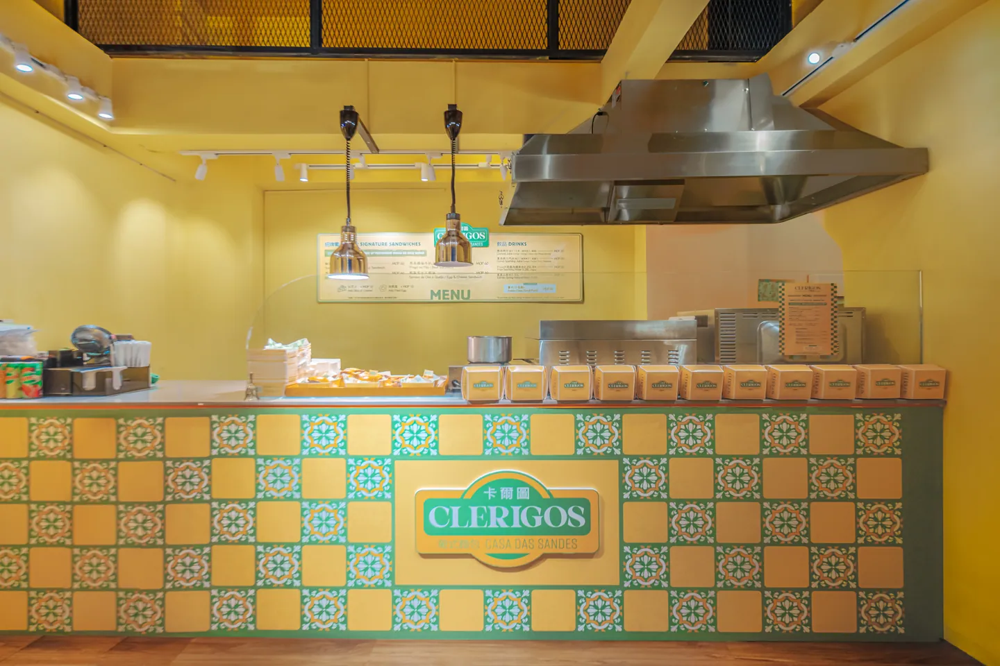
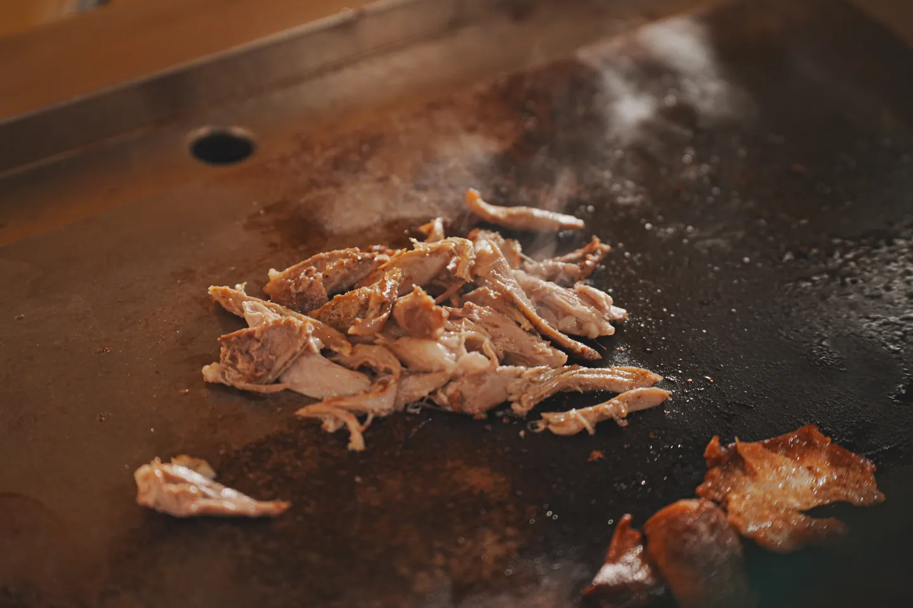
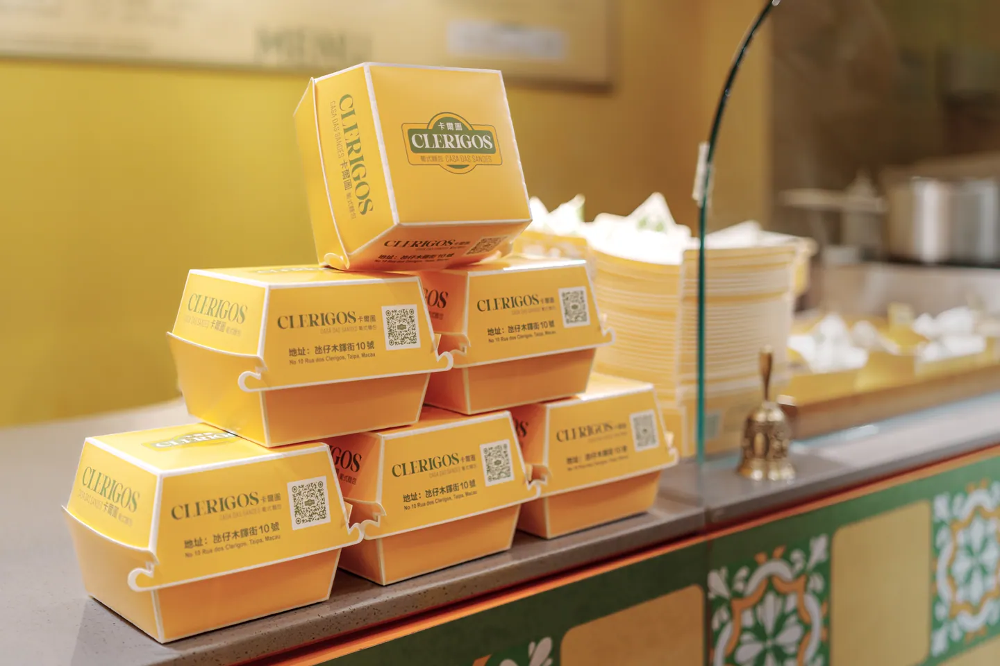
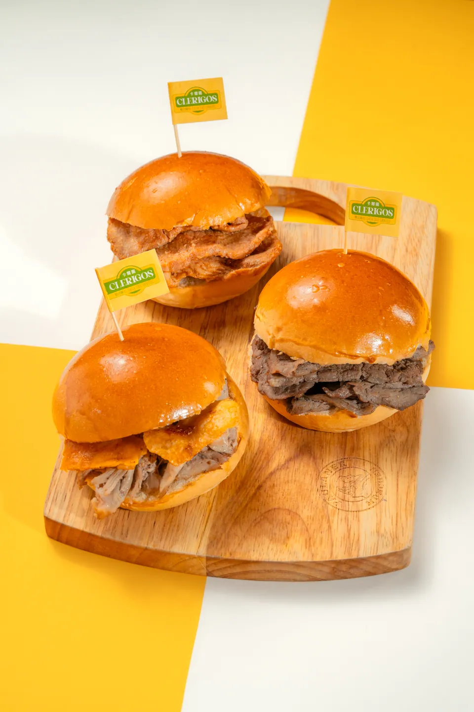

跳到内容
Max
Your
Way
作品
社媒营销
摄影
宣传片
企业合作
服务
菜单
作品
社媒营销
摄影
宣传片
企业合作
服务
关于工作室
简体
繁體
EN
项目咨询 ↗
← 商业摄影
CLERIGOS MACAU
卡爾圖葡式麵包
官也街店面与招牌猪扒包
工作室独立拍摄
项目简介
拍摄官也街门店、招牌葡式猪扒包与制作细节。
浏览项目作品 ↗
项目交付
门店环境与招牌照片
产品、包装与制作过程照片
官也街门店
招牌猪扒包
傍晚的店招

开放式厨房

铁板煎肉

外带包装

面包拼盘
更多合作项目 ↗
咨询类似拍摄 ↗
×
 MaxYourWay
MaxYourWay